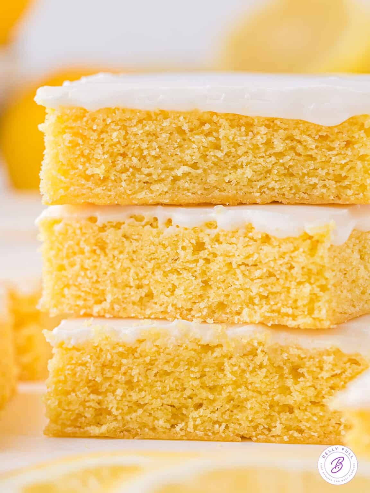

Lemon Blondie Recipe

Ingredients
Blondie
- 3/4 C salted butter, softened
- 1 C granulated sugar
- 1/4 C light brown sugar
- 3 large eggs
- 2 large lemons, juiced and zested
- 1 1/4 C all-purpose flour, spooned and leveled
- 1/4 tsp baking soda
Glaze
- 2 C powdered sugar
- 3 Tbsp lemon juice, equal to about 1 medium lemon
- 2 Tbsp heavy cream
Instructions
- Preheat oven to 350 deg. Fahrenheit. Line a 9x13 inch baking
dish with parchment paper.
- In large bowl, beat salted butter, granulated sugar, and light
brown sugar until well creamed.
- Mix in eggs, one at a time, until completelt combined.
- Add lemon juice and zest, beat until well mixed.
- Add flour and baking powder, mix on low speed and beat just until
fully combined.
- Pour into baking dish and bake for 25-30 mins.
- Take out blondies when done and set aside to cool to room temp.
- While cooling, make glaze by whisking the powdered sugar, lemon
juice, and heavy cream together until smooth.
- Pour glaze over cooled blondies and let glaze set.
- Cut and serve. Enjoy!